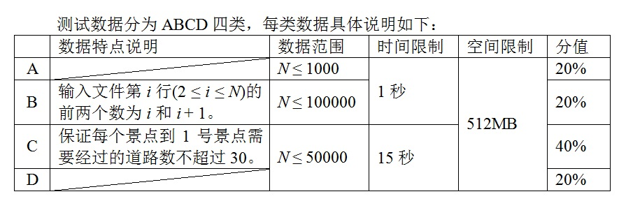

共N行。
第1行包含一个字符和两个正整数，字符为ABCD中的一个，用来表示这个测试数据的类型
（详见下面的数据规模和约定），另外两个正整数分别表示N和K (K < N),N<=100000
第2行至第N行，每行有三个正整数u、v和w (u, v ≤ N，w ≤ 10000)。
表示u号景点和v号景点之间有一条道路，长度为w。
输入文件保证符合题目的约定，即任意两个景点之间都有且仅有一条路径相连。
A 6 3
1 2 2
1 3 4
1 4 3
3 5 1
3 6 2
4
6
4
7
5
6
//样例1中输出对应的景点序列分别为：
1号景点是{1, 3}，2号景点是{2, 1, 3}，3号景点是{3, 1}，4号景点是{4, 1, 3}，5号景点是{5, 3, 1}，6号景点是{6, 3, 1}。
保证每个景点到1号景点需要经过的道路数不超过30